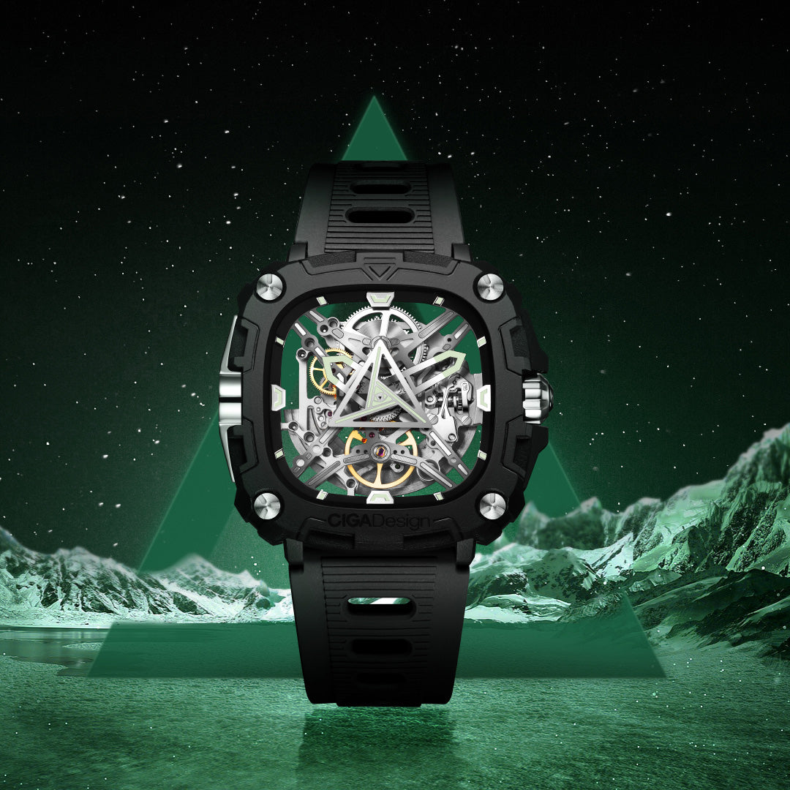
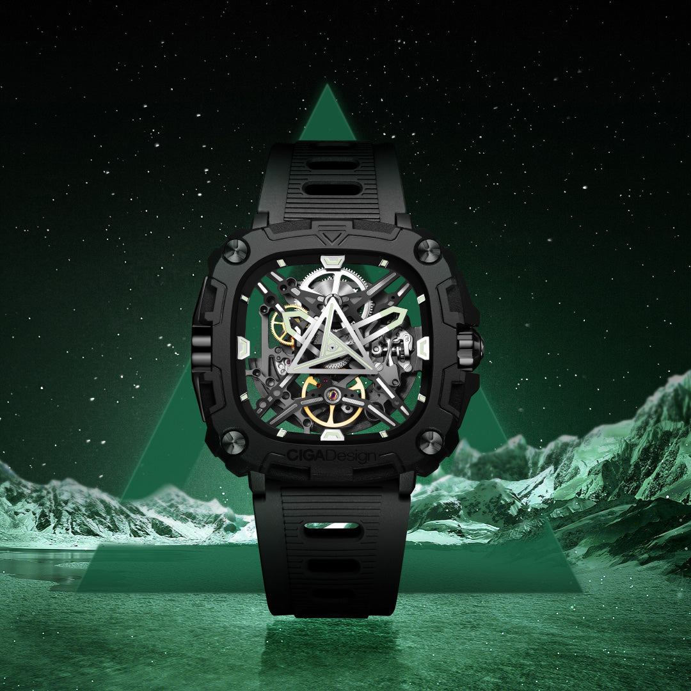
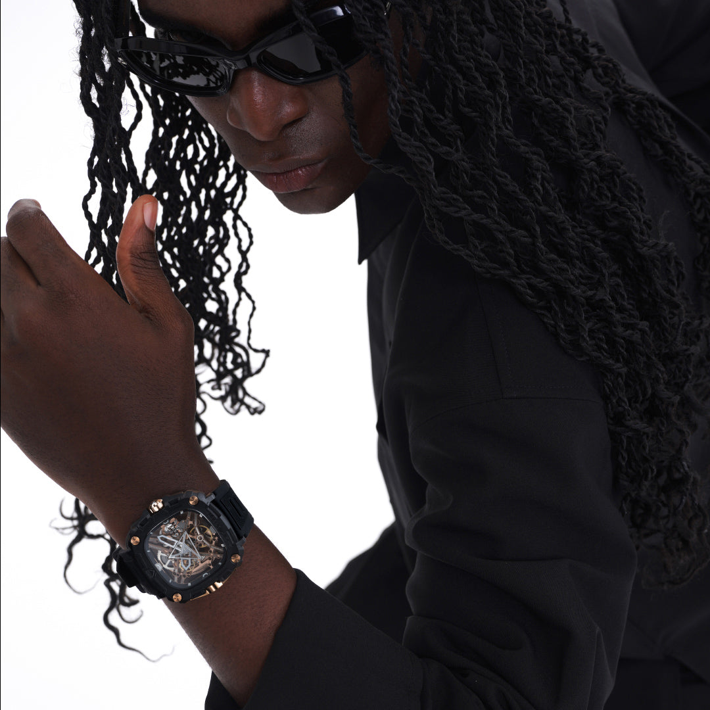
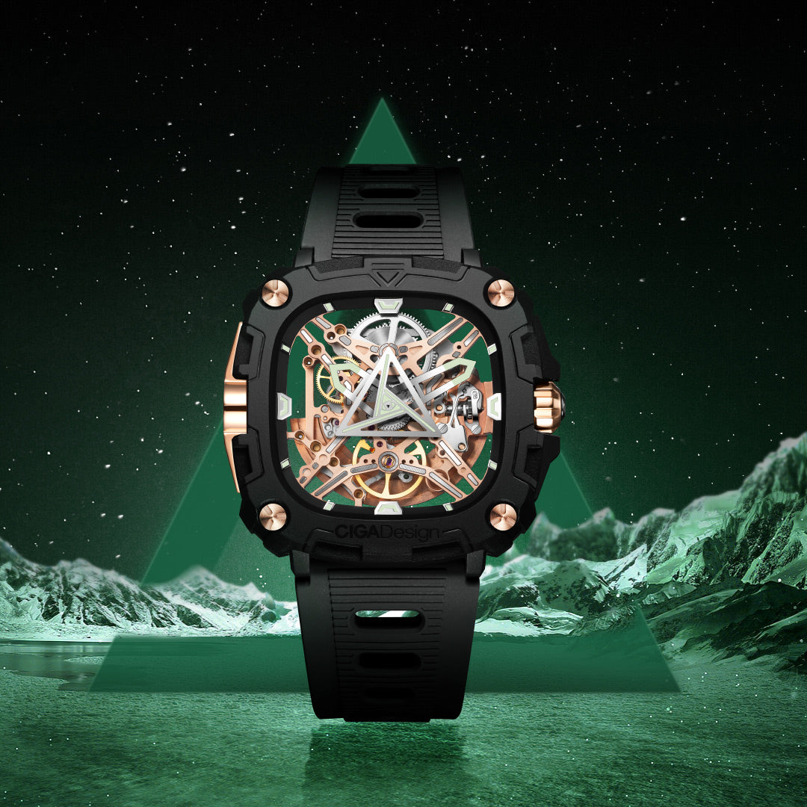
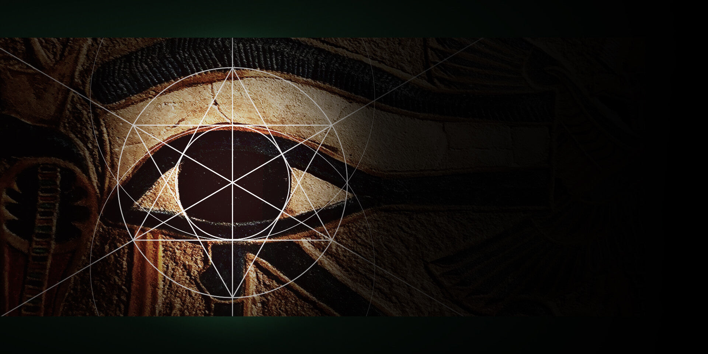

Bio-cerâmica, marcadores e ponteiros luminosos e um mostrador construído a partir do símbolo milenar do Olho de Hórus. O modelo combina repertório cultural forte com leitura mecânica contemporânea.
Design inspirado no Olho de Hórus, símbolo egípcio de proteção
O Eye of Horus une simbologia milenar egípcia com materiais de alta tecnologia numa peça única de relojoaria contemporânea.

O símbolo do Olho de Hórus, usado pelo antigo Egito como amuleto de proteção, saúde e sabedoria, ganha vida no centro do mostrador deste relógio. A CIGA design traduziu a geometria sagrada do hieróglifo em um desenho contemporâneo de alta precisão, onde cada linha curva é reproduzida com exatidão milimétrica.
A caixa em bio-cerâmica reforça o caráter tátil e contemporâneo da peça. Mais importante do que superlativos técnicos é a sensação de superfície, leveza visual e contraste com os detalhes escuros do mostrador e da coroa.
O que mais distingue o Eye of Horus dentro da coleção é a leitura noturna: marcadores de hora ao redor da caixa, ponteiros e o ponteiro de segundos triangular recebem aplicação luminosa, fazendo o símbolo ganhar vida no escuro. Nota: nas séries atuais a coroa é metálica; a coroa em obsidiana equipou apenas as primeiras séries.
O movimento automático CD-01 opera a 21.600 semi-oscilações por hora com 24 joias, enquanto o conjunto ótico foi pensado para preservar o símbolo central como protagonista. A melhor abordagem aqui é apresentar o relógio como peça de design com substância mecânica, não como exercício de exagero técnico.
Caixa em bio-cerâmica com presença tátil e visual distinta, alinhada ao lado mais experimental e escultórico da CIGA design.
Marcadores de hora, ponteiros e o ponteiro de segundos triangular com aplicação luminosa. O símbolo continua legível — e fotogênico — no escuro.
Calibre automático com 24 joias e 21.600 vph. Rotor bi-direcional visível pelo fundo transparente de safira.
O Olho de Hórus reproduzido por fresamento CNC de alta precisão. Geometria sagrada milenar com exatidão relojoeira contemporânea.
Bio-cerâmica, lume e movimento automático, cada detalhe técnico reforça a identidade única desta peça.

| Tamanho da Caixa | 47,3 × 48 mm |
| Espessura | 12,1 mm |
| Material da Caixa | Bio-cerâmica de alta performance |
| Vidro | Quartzo mineral anti-reflexo |
| Fundo | Transparente de safira |
| Coroa | Metálica (séries atuais; obsidiana apenas nas primeiras séries) |
| Movimento | CIGA CD-01 automático |
| Frequência | 21.600 semi-oscilações/h (3 Hz) |
| Reserva de Marcha | ≥ 40 horas |
| Joias | 24 rubis |
| Resistência à Água | 3 ATM (30 metros) |
| Pulseira | Silicone com barra de troca rápida e fivela de pino |
| Largura da Pulseira | 22 mm |
O ponto forte do Eye of Horus está na combinação entre bio-cerâmica, lume e simbologia. Nesta revisão, o texto foi ajustado para priorizar materialidade e autenticidade visual, sem recorrer a métricas difíceis de sustentar no material público.
O Eye of Horus é um relógio de colecionador, sua comunicação deve refletir a raridade da combinação entre mitologia, materiais e mecânica.
Como embaixador do Eye of Horus, você apresenta uma peça que existe na interseção entre arqueologia e relojoaria de vanguarda. O símbolo milenar do Olho de Hórus, o material bio-cerâmico exclusivo e a leitura luminosa noturna formam uma tríade que não tem equivalente no mercado. Comunique essa unicidade com precisão.
Dez ângulos narrativos para maximizar o impacto do seu conteúdo sobre o Eye of Horus.
| # | Direcionamento | Foco Narrativo | Base do Script (Exemplo) |
|---|---|---|---|
| 01 | O Símbolo que Atravessa o Tempo | Olho de Hórus, 5000 anos de história no pulso | "Os egípcios usavam o Olho de Hórus como proteção. Você usa no pulso em 2026." |
| 02 | A Dureza da Cerâmica | Bio-cerâmica como diferencial de material | "Parece delicado. É mais duro que qualquer faca de cozinha. Isso é bio-cerâmica." |
| 03 | O Olho que Brilha no Escuro | Lume nos marcadores, ponteiros e segundos triangular | "Apaga a luz. O Olho de Hórus continua olhando pra você — mostrador com aplicação luminosa." |
| 04 | Leve Como Deve Ser | Bio-cerâmica com presença leve e tátil | "Relógio de 47mm que parece leve no pulso. Isso é o que a bio-cerâmica faz." |
| 05 | A Mecânica Visível | Fundo de safira transparente | "Vire o pulso. O movimento automático está à vista, tecnologia como arte." |
| 06 | Para Quem Coleciona Significado | Posicionamento como objeto colecionável | "Não é só um relógio. É um artefato com 5000 anos de simbologia no mostrador." |
| 07 | Close que Vende | Mostrador CNC do Olho de Hórus, conteúdo visual único | "Essa macro do mostrador vai parar sua audiência no scroll. Garantido." |
| 08 | Proteção Literal | Simbologia do Olho de Hórus + durabilidade material | "Símbolo de proteção no mostrador. Material que resiste a arranhões. Proteção em dois níveis." |
| 09 | O Presente Inesquecível | Ocasiões especiais, presente com significado | "Para dar de presente para quem entende que objetos podem ter alma." |
| 10 | 40 Horas de Autonomia | Praticidade do automático | "Use, tire, deixe parado. Volta ao horário em 40 horas. Sem bateria." |
Imagens oficiais do Eye of Horus disponíveis para uso em seu conteúdo.


Compre direto no site oficial da CIGA design Brasil. Garantia, parcelamento e envio para todo o país pela JG Importadora.
Descontos cumulativos: 5% no Pix e mais 5% se for a sua primeira compra.
Comprar no Site Oficial usecigadesign.com.br